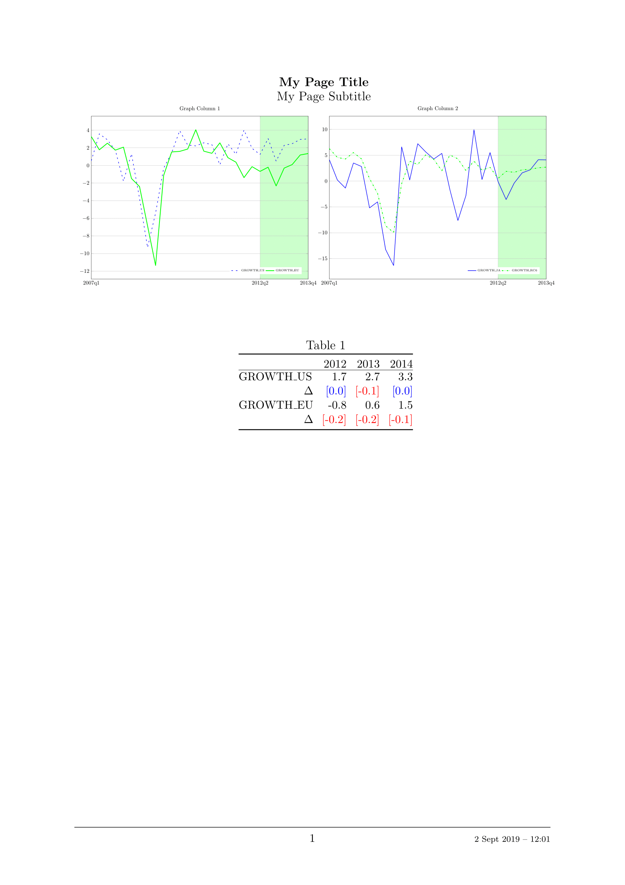

7. Reporting¶
Dynare provides a simple interface for creating \(\text{\LaTeX}\)
reports, comprised of \(\text{\LaTeX}\) tables and PGFPLOTS/TikZ
graphs. You can use the report as created through Dynare or pick out
the pieces (tables and graphs) you want for inclusion in your own
paper. Though Dynare provides a subset of options available through
PGFPLOTS/TikZ, you can easily modify the graphs created by Dynare
using the options available in the PGFPLOTS/TikZ manual. You can
either do this manually or by passing the options to
miscTikzAxisOptions or
graphMiscTikzAddPlotOptions.
Reports are created and modified by calling methods on class
objects. The objects are hierarchical, with the following order (from
highest to lowest): Report, Page, Section,
Graph/Table/Vspace, Series. For simplicity of syntax, we
abstract away from these classes, allowing you to operate directly on
a Report object, while maintaining the names of these classes in
the Report class methods you will use.
The report is created sequentially, command by command, hence the
order of the commands matters. When an object of a certain hierarchy
is inserted, all methods will function on that object until an object
of equal or greater hierarchy is added. Hence, once you add a Page
to the report, every time you add a Section object, it will be
added to this Page until another Page is added to the report
(via addPage). This will become more clear with the example
at the end of the section.
Options to methods are passed differently than those to Dynare
commands. They take the form of named options to MATLAB functions
where the arguments come in pairs
(e.g. function_name(`option_1_name', `option_1_value',
`option_2_name', `option_2_value', ...), where option_X_name is
the name of the option while option_X_value is the value assigned
to that option). The ordering of the option pairs matters only in the
unusual case when an option is provided twice (probably
erroneously). In this case, the last value passed is the one that is
used.
Below, you will see a list of methods available for the Report class and a clarifying example.
- Constructor: report¶
Instantiates aReportobject.Options
- compiler, FILENAME¶
The full path to the \(\text{\LaTeX}\) compiler on your system. If this option is not provided, Dynare will try to find the appropriate program to compile \(\text{\LaTeX}\) on your system. Default is system dependent:
Windows: the result of findtexmf
--file-type=exe pdflatex.macOS and Linux: the result of
which pdflatex.
- directory, FILENAME¶
The path to the directory you want the report created in. Default: current directory.
- showDate, BOOLEAN¶
Display the date and time when the report was compiled. Default:
true.
- fileName, FILENAME¶
The file name to use when saving this report. Default:
report.tex.
- header, STRING¶
The valid \(\text{\LaTeX}\) code to be included in the report before
\begin{document}. Default:empty.
- maketoc, BOOLEAN¶
Whether or not to make the table of contents. One entry is made per page containing a title. Default:
false.
- margin, DOUBLE¶
The margin size. Default:
2.5.
- marginUnit, `cm' | `in'¶
Units associated with the margin. Default:
`cm'.
- orientation, `landscape' | `portrait'¶
Paper orientation: Default:
`portrait'.
- paper, `a4' | `letter'¶
Paper size. Default:
`a4'.
- reportDirName, FILENAME¶
The name of the folder in which to store the component parts of the report (preamble, document, end). Default:
tmpRepDir.
- showDate, BOOLEAN
Display the date and time when the report was compiled. Default: true.
- showOutput, BOOLEAN¶
Print report creation progress to screen. Shows you the page number as it is created and as it is written. This is useful to see where a potential error occurs in report creation. Default:
true.
- title, STRING¶
Report Title. Default:
none.
- Method: addPage¶
Adds a Page to the Report.Options
- footnote, STRING¶
A footnote to be included at the bottom of this page. Default:
none.
- latex, STRING¶
The valid \(\text{\LaTeX}\) code to be used for this page. Alows the user to create a page to be included in the report by passing \(\text{\LaTeX}\) code directly. If this option is passed, the page itself will be saved in the
pageDirNamedirectory in the formpage_X.texwhere X refers to the page number. Default:empty.
- orientation, `landscape' | `portrait'
See
orientation.
- pageDirName, FILENAME¶
The name of the folder in which to store this page. Directory given is relative to the directory option of the report class. Only used when the
latexcommand is passed. Default:tmpRepDir.
- paper, `a4' | `letter'
See
paper.
- title, STRING | CELL_ARRAY_STRINGS¶
With one entry (a STRING), the title of the page. With more than one entry (a CELL_ARRAY_STRINGS), the title and subtitle(s) of the page. Values passed must be valid \(\text{\LaTeX}\) code (e.g.,
%must be\%). Default:none.
- titleFormat, STRING | CELL_ARRAY_STRINGS¶
A string representing the valid \(\text{\LaTeX}\) markup to use on
title. The number of cell array entries must be equal to that of thetitleoption if you do not want to use the default value for the title (and subtitles). Default:\large\bfseries.
- titleTruncate, INTEGER¶
Useful when automatically generating page titles that may become too long,
titleTruncatecan be used to truncate a title (and subsequent subtitles) when they pass the specified number of characters. Default:.off.
- Method: addSection¶
Adds aSectionto aPage.Options
- cols, INTEGER¶
The number of columns in the section. Default:
1.
- height, STRING¶
A string to be used with the
\sectionheight\(\text{\LaTeX}\) command. Default:'!'
- Method: addGraph¶
Adds aGraphto aSection.Options
- data, dseries¶
The
dseriesthat provides the data for the graph. Default:none.
- axisShape, `box' | `L'¶
The shape the axis should have.
`box'means that there is an axis line to the left, right, bottom, and top of the graphed line(s). ‘L’`` means that there is an axis to the left and bottom of the graphed line(s). Default:`box'.
- graphDirName, FILENAME¶
The name of the folder in which to store this figure. Directory given is relative to the directory option of the report class. Default:
tmpRepDir.
- graphName, STRING¶
The name to use when saving this figure. Default: something of the form
graph_pg1_sec2_row1_col3.tex.
- height, DOUBLE¶
The height of the graph, in inches. Default:
4.5.
- showGrid, BOOLEAN¶
Whether or not to display the major grid on the graph. Default:
true.
- showLegend, BOOLEAN¶
Whether or not to display the legend.
Unless you use the
graphLegendNameoption, the name displayed in the legend is the tex name associated with thedseries. You can modify this tex name by usingtex_rename. Default:false.
- legendAt, NUMERICAL_VECTOR¶
The coordinates for the legend location. If this option is passed, it overrides the
legendLocationoption. Must be of size2. Default:empty.
- showLegendBox, BOOLEAN¶
Whether or not to display a box around the legend. Default:
false.
- legendLocation, OPTION¶
Where to place the legend in the graph. Possible values for OPTION are:
`south west' | `south east' | `north west' | `north east' | `outer north east'
Default:
`south east'.
- legendOrientation, `vertical' | `horizontal'¶
Orientation of the legend. Default:
`horizontal'.
- legendFontSize, OPTION¶
The font size for legend entries. Possible values for OPTION are:
`tiny' | `scriptsize' | `footnotesize' | `small' | `normalsize' | `large' | `Large' | `LARGE' | `huge' | `Huge'
Default:
tiny.
- miscTikzAxisOptions, STRING¶
If you are comfortable with
PGFPLOTS/TikZ, you can use this option to pass arguments directly to thePGFPLOTS/TikZaxis environment command. Specifically to be used for desiredPGFPLOTS/TikZoptions that have not been incorporated into Dynare Reporting. Default:empty.
- miscTikzPictureOptions, STRING¶
If you are comfortable with
PGFPLOTS/TikZ, you can use this option to pass arguments directly to thePGFPLOTS/TikZtikzpictureenvironment command. (e.g., to scale the graph in the x and y dimensions, you can pass following to this option: ‘xscale=2.5, yscale=0.5’). Specifically to be used for desired ``PGFPLOTS/TikZoptions that have not been incorporated into Dynare Reporting. Default:empty.
- seriesToUse, CELL_ARRAY_STRINGS¶
The names of the series contained in the
dseriesprovided to thedataoption. If empty, use all series provided todataoption. Default:empty.
- shade, dates¶
The date range showing the portion of the graph that should be shaded. Default:
none.
- shadeColor, STRING¶
The color to use in the shaded portion of the graph. All valid color strings defined for use by
PGFPLOTS/TikZare valid. A list of defined colors is:'red', 'green', 'blue', 'cyan', 'magenta', 'yellow', 'black', 'gray', 'white','darkgray', 'lightgray', 'brown', 'lime', 'olive', 'orange', 'pink', 'purple', 'teal', 'violet'.
Furthermore, You can use combinations of these colors. For example, if you wanted a color that is 20% green and 80% purple, you could pass the string
'green!20!purple'. You can also use RGB colors, following the syntax:`rgb,255:red,231;green,84;blue,121'which corresponds to the RGB color(231;84;121). More examples are available in the section 4.7.5 of thePGFPLOTS/TikZmanual, revision 1.10. Default:`green'
- shadeOpacity, DOUBLE¶
The opacity of the shaded area, must be in
[0,100]. Default:20.
- tickFontSize, OPTION¶
The font size for x- and y-axis tick labels. Possible values for OPTION are:
`tiny' | `scriptsize' | `footnotesize' | `small' | `normalsize' | `large' | `Large' | `LARGE' | `huge' | `Huge'
Default:
normalsize.
- title, STRING | CELL_ARRAY_STRINGS
Same as
title, just for graphs.
- titleFontSize, OPTION¶
The font size for title. Possible values for OPTION are:
`tiny' | `scriptsize' | `footnotesize' | `small' | `normalsize' | `large' | `Large' | `LARGE' | `huge' | `Huge'
Default:
normalsize.
- titleFormat, STRING¶
The format to use for the graph title. Unlike
titleFormat, due to a constraint ofTikZ, this format applies to the title and subtitles. Default:TikZdefault.
- width, DOUBLE¶
The width of the graph, in inches. Default:
6.0.
- writeCSV, BOOLEAN¶
Whether or not to write a CSV file with only the plotted data. The file will be saved in the directory specified by
graphDirNamewith the same base name as specified bygraphNamewith the ending.csv. Default:false.
- xlabel, STRING¶
The x-axis label. Default:
none.
- ylabel, STRING¶
The y-axis label. Default:
none.
- xAxisTight, BOOLEAN¶
Use a tight x axis. If false, uses
PGFPLOTS/TikZenlarge x limitsto choose appropriate axis size. Default:true.
- xrange, dates¶
The boundary on the x-axis to display in the graph. Default:
all.
- xTicks, NUMERICAL_VECTOR¶
Used only in conjunction with
xTickLabels, this option denotes the numerical position of the label along the x-axis. The positions begin at1. Default: the indices associated with the first and last dates of thedseriesand, if passed, the index associated with the first date of theshadeoption.
- xTickLabels, CELL_ARRAY_STRINGS | `ALL'¶
The labels to be mapped to the ticks provided by
xTicks. Default: the first and last dates of thedseriesand, if passed, the date first date of theshadeoption.
- xTickLabelAnchor, STRING¶
Where to anchor the x tick label. Default:
`east'.
- xTickLabelRotation, DOUBLE¶
The amount to rotate the x tick labels by. Default:
0.
- yAxisTight, BOOLEAN¶
Use a tight y axis. If false, uses
PGFPLOTS/TikZenlarge y limitsto choose appropriate axis size. Default:false.
- yrange, NUMERICAL_VECTOR¶
The boundary on the y-axis to display in the graph, represented as a
NUMERICAL_VECTORof size2, with the first entry less than the second entry. Default:all.
- yTickLabelFixed, BOOLEAN¶
Round the y tick labels to a fixed number of decimal places, given by
yTickLabelPrecision. Default:true.
- yTickLabelPrecision, INTEGER¶
The precision with which to report the
yTickLabel. Default:0.
- yTickLabelScaled, BOOLEAN¶
Determines whether or not there is a common scaling factor for the y axis. Default:
true.
- yTickLabelZeroFill, BOOLEAN¶
Whether or not to fill missing precision spots with zeros. Default:
true.
- showZeroline, BOOLEAN¶
Display a solid black line at \(y = 0\). Default:
false.
- zeroLineColor, STRING¶
The color to use for the zero line. Only used if
showZeroLineis true. See the explanation inshadeColorfor how to use colors with reports. Default:`black'.
- Method: addTable¶
Adds aTableto aSection.Options
- data, dseries
See
data.
- highlightRows, CELL_ARRAY_STRINGS¶
A cell array containing the colors to use for row highlighting. See
shadeColorfor how to use colors with reports. Highlighting for a specific row can be overridden by using thetableRowColoroption toaddSeries. Default:empty.
- showHlines, BOOLEAN¶
Whether or not to show horizontal lines separating the rows. Default:
false.
- precision, INTEGER¶
The number of decimal places to report in the table data (rounding done via the round half away from zero method). Default:
1.
- range, dates¶
The date range of the data to be displayed. Default:
all.
- seriesToUse, CELL_ARRAY_STRINGS
See
seriesToUse.
- tableDirName, FILENAME¶
The name of the folder in which to store this table. Directory given is relative to the directory option of the report class. Default:
tmpRepDir.
- tableName, STRING¶
The name to use when saving this table. Default: something of the form
table_pg1_sec2_row1_col3.tex.
- title, STRING
Same as
title, just for tables.
- titleFormat, STRING
Same as
titleFormat, just for tables. Default:\large.
- vlineAfter, dates | CELL_ARRAY_DATES¶
Show a vertical line after the specified date (or dates if a cell array of dates is passed). Default:
empty.
- vlineAfterEndOfPeriod, BOOLEAN¶
Show a vertical line after the end of every period (i.e. after every year, after the fourth quarter, etc.). Default:
false.
- showVlines, BOOLEAN¶
Whether or not to show vertical lines separating the columns. Default:
false.
- writeCSV, BOOLEAN
Whether or not to write a CSV file containing the data displayed in the table. The file will be saved in the directory specified by
tableDirNamewith the same base name as specified bytableNamewith the ending.csv. Default:false.
- Method: addSeries¶
Adds aSeriesto aGraphor aTable.Options specific to graphs begin with
`graph'while options specific to tables begin with`table'.Options
- data, dseries
See
data.
- graphBar, BOOLEAN¶
Whether or not to display this series as a bar graph as oppsed to the default of displaying it as a line graph. Default:
false.
- graphFanShadeColor, STRING¶
The shading color to use between a series and the previously-added series in a graph. Useful for making fan charts. Default:
empty.
- graphFanShadeOpacity, INTEGER¶
The opacity of the color passed in
graphFanShadeColor. Default:50.
- graphBarColor, STRING¶
The outline color of each bar in the bar graph. Only active if
graphBaris passed. Default:`black'.
- graphBarFillColor, STRING¶
The fill color of each bar in the bar graph. Only active if
graphBaris passed. Default:`black'.
- graphBarWidth, DOUBLE¶
The width of each bar in the bar graph. Only active if
graphBaris passed. Default:2.
- graphHline, DOUBLE¶
Use this option to draw a horizontal line at the given value. Default:
empty.
- graphLegendName, STRING¶
The name to display in the legend for this series, passed as valid \(\text{\LaTeX}\) (e.g.,
GDP_{US}, $\alpha$, \color{red}GDP\color{black}). Will be displayed only if thedataandshowLegendoptions have been passed. Default: the tex name of the series.
- graphLineColor, STRING¶
Color to use for the series in a graph. See the explanation in
shadeColorfor how to use colors with reports. Default:`black'
- graphLineStyle, OPTION¶
Line style for this series in a graph. Possible values for OPTION are:
`none' | `solid' | `dotted' | `densely dotted' | `loosely dotted' | `dashed' | `densely dashed' | `loosely dashed' | `dashdotted' | `densely dashdotted' | `loosely dashdotted' | `dashdotdotted' | `densely dashdotdotted' | `loosely dashdotdotted'
Default:
`solid'.
- graphLineWidth DOUBLE¶
Line width for this series in a graph. Default:
0.5.
- graphMarker, OPTION¶
The Marker to use on this series in a graph. Possible values for OPTION are:
`x' | `+' | `-' | `|' | `o' | `asterisk' | `star' | `10-pointed star' | `oplus' | `oplus*' | `otimes' | `otimes*' | `square' | `square*' | `triangle' | `triangle*' | `diamond' | `diamond*' | `halfdiamond*' | `halfsquare*' | `halfsquare right*' | `halfsquare left*' | `Mercedes star' | `Mercedes star flipped' | `halfcircle' | `halfcircle*' | `pentagon' | `pentagon star'
Default:
none.
- graphMarkerEdgeColor, STRING¶
The edge color of the graph marker. See the explanation in
shadeColorfor how to use colors with reports. Default:graphLineColor.
- graphMarkerFaceColor, STRING¶
The face color of the graph marker. See the explanation in
shadeColorfor how to use colors with reports. Default:graphLineColor.
- graphMarkerSize, DOUBLE¶
The size of the graph marker. Default:
1.
- graphMiscTikzAddPlotOptions, STRING¶
If you are comfortable with
PGFPLOTS/TikZ, you can use this option to pass arguments directly to thePGFPLOTS/TikZaddPlotscommand. (e.g., Instead of passing the marker options above, you can pass a string such as the following to this option:`mark=halfcircle*,mark options={rotate=90,scale=3}'). Specifically to be used for desiredPGFPLOTS/TikZoptions that have not been incorporated into Dynare Reproting. Default:empty.
- graphShowInLegend, BOOLEAN¶
Whether or not to show this series in the legend, given that the
showLegendoption was passed toaddGraph. Default:true.
- graphVline, dates¶
Use this option to draw a vertical line at a given date. Default:
empty.
- tableDataRhs, dseries¶
A series to be added to the right of the current series. Usefull for displaying aggregate data for a series. e.g if the series is quarterly
tableDataRhscould point to the yearly averages of the quarterly series. This would cause quarterly data to be displayed followed by annual data. Default:empty.
- tableRowColor, STRING¶
The color that you want the row to be. Predefined values include
LightCyanandGray. Default:white.
- tableRowIndent, INTEGER¶
The number of times to indent the name of the series in the table. Used to create subgroups of series. Default:
0.
- tableShowMarkers, BOOLEAN¶
In a Table, if
true, surround each cell with brackets and color it according totableNegColorandtablePosColor. No effect for graphs. Default:false.
- tableAlignRight, BOOLEAN¶
Whether or not to align the series name to the right of the cell. Default:
false.
- tableMarkerLimit, DOUBLE¶
For values less than \(-1*\texttt{tableMarkerLimit}\), mark the cell with the color denoted by tableNegColor. For those greater than
tableMarkerLimit, mark the cell with the color denoted by tablePosColor. Default:1e-4.
- tableNaNSymb, STRING¶
Replace
NaNvalues with the text in this option. Default:NaN.
- tableNegColor, LATEX_COLOR¶
The color to use when marking Table data that is less than zero. Default:
`red'
- tablePrecision, INTEGER¶
The number of decimal places to report in the table data. Default: the value set by
precision.
- tablePosColor, LATEX_COLOR¶
The color to use when marking Table data that is greater than zero. Default:
`blue'
- tableSubSectionHeader, STRING¶
A header for a subsection of the table. No data will be associated with it. It is equivalent to adding an empty series with a name. Default:
''
- zeroTol, DOUBLE¶
The zero tolerance. Anything smaller than
zeroToland larger than-zeroTolwill be set to zero before being graphed or written to the table. Default:1e-6.
- Method: addParagraph¶
Adds aParagraphto aSection.The
Sectioncan only be comprised ofParagraphsand must only have 1 column.Options
- balancedCols, BOOLEAN¶
Determines whether the text is spread out evenly across the columns when the
Paragraphhas more than one column. Default:true.
- cols, INTEGER
The number of columns for the
Paragraph. Default:1.
- heading, STRING¶
The heading for the
Paragraph(like a section heading). The string must be valid \(\text{\LaTeX}\) code. Default:empty.
- indent, BOOLEAN¶
Whether or not to indent the paragraph. Default:
true.
- text, STRING¶
The paragraph itself. The string must be valid \(\text{\LaTeX}\) code. Default:
empty.
- Method: addVspace¶
Adds aVspace(vertical space) to aSection.Options
- hline, INTEGER¶
The number of horizontal lines to be inserted. Default:
0.
- number, INTEGER¶
The number of new lines to be inserted. Default:
1.
- Method: write¶
Writes the \(\text{\LaTeX}\) representation of thisReport, saving it to the file specified byfilename.
- Method: compile¶
Compiles the report written bywriteinto apdffile. If the report has not already been written (determined by the existence of the file specified byfilename,writeis called.Options
- compiler, FILENAME
Like
compiler, except will not overwrite the value ofcompilercontained in the report object. Hence, passing the value here is useful for using different \(\text{\LaTeX}\) compilers or just for passing the value at the last minute.
- showOutput, BOOLEAN
Print the compiler output to the screen. Useful for debugging your code as the \(\text{\LaTeX}\) compiler hangs if there is a problem. Default: the value of
showOutput.
- showReport, BOOLEAN¶
Open the compiled report (works on Windows and macOS on MATLAB). Default:
true.
Example
The following code creates a one page report. The first part of the page contains two graphs displayed across two columns and one row. The bottom of the page displays a centered table:
%% Create dseries
dsq = dseries(`quarterly.csv');
dsa = dseries(`annual.csv');
dsca = dseries(`annual_control.csv');
%% Report
rep = report();
%% Page 1
rep.addPage('title', {'My Page Title', 'My Page Subtitle'}, ...
'titleFormat', {'\large\bfseries', '\large'});
% Section 1
rep.addSection('cols', 2);
rep.addGraph('title', 'Graph Column 1', 'showLegend', true, ...
'xrange', dates('2007q1'):dates('2013q4'), ...
'shade', dates('2012q2'):dates('2013q4'));
rep.addSeries('data', dsq{'GROWTH_US'}, 'graphLineColor', 'blue', ...
'graphLineStyle', 'loosely dashed', 'graphLineWidth', 1);
rep.addSeries('data', dsq{'GROWTH_EU'}, 'graphLineColor', 'green', ...
'graphLineWidth', 1.5);
rep.addGraph('title', 'Graph Column 2', 'showLegend', true, ...
'xrange', dates('2007q1'):dates('2013q4'), ...
'shade', dates('2012q2'):dates('2013q4'));
rep.addSeries('data', dsq{'GROWTH_JA'}, 'graphLineColor', 'blue', ...
'graphLineWidth', 1);
rep.addSeries('data', dsq{'GROWTH_RC6'}, 'graphLineColor', 'green', ...
'graphLineStyle', 'dashdotdotted', 'graphLineWidth', 1.5);
% Section 2
rep.addVspace('number', 15);
rep.addSection();
rep.addTable('title', 'Table 1', 'range', dates('2012Y'):dates('2014Y'));
shortNames = {'US', 'EU'};
longNames = {'United States', 'Euro Area'};
for i=1:length(shortNames)
rep.addSeries('data', dsa{['GROWTH_' shortNames{i}]});
delta = dsa{['GROWTH_' shortNames{i}]}-dsca{['GROWTH_' shortNames{i}]};
delta.tex_rename_('$\Delta$');
rep.addSeries('data', delta, ...
'tableShowMarkers', true, 'tableAlignRight', true);
end
%% Write & Compile Report
rep.write();
rep.compile();
Once compiled, the report looks like:
